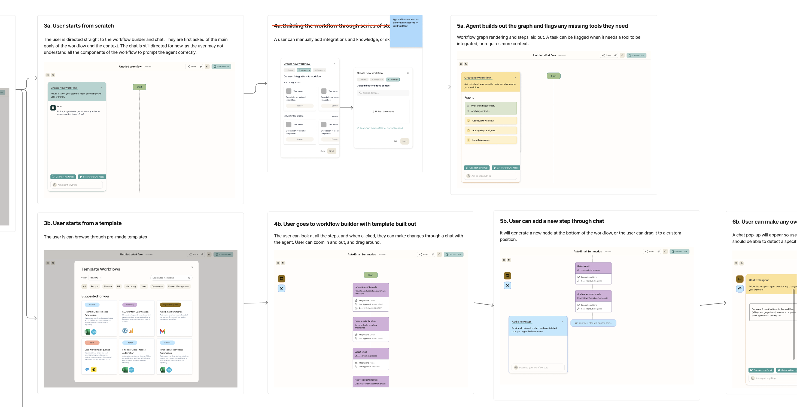

How do you give an AI real work to do, and still keep the person in control?
I work as the product designer at an early-stage AI company building an AI platform for small to mid-sized businesses, where my focus is the moment a person hands work over to an AI and then has to stay in control of it once it is running. Most of my job was designing for that, keeping the person in a position to understand, trust, and oversee what the AI actually does on their behalf.
Outcome
I designed for trust, so the work could feel lighter without feeling out of your hands.
People don't easily trust AI, and that becomes very real the moment the work touches their actual tools and data, because the AI is acting on their behalf. The experience had to make that feel safe rather than opaque.
I worked closely with the founder and the engineering team to design for trust and oversight, so a person can understand what the AI is doing and steer it as it goes, rather than being handed a finished result they have to take on faith.
Across more than twenty feedback sessions with early users and customers, what they responded to most was feeling able to see and check the work, so it felt lighter without feeling out of their hands.
How do you trust a workflow you didn't build?
As AI has become more capable and more accessible, the person describing the work is often not technical and does not want to map out steps. They want to say what they need and have it handled. That is freeing, and it is also unnerving, because you are trusting something you did not build to act for you.
That was the problem I kept coming back to. When a person is not the one wiring the steps, and the work touches their real tools, their data, and permission to act on their behalf, how do you give them enough visibility and control to actually trust it. That question sat under everything I designed.
How this kind of work was handled before AI.
Before designing anything, I looked at how this work was done before AI, and the honest answer was that you built it yourself, wiring each trigger and action together by hand in tools like Zapier and Bardeen. The more time I spent there, the clearer it became that I needed a different approach, because I was no longer designing a fixed set of steps a person assembled themselves. I was designing for an AI that takes the work on, which moved the real design problem away from the wiring and onto trust.

I also looked at how today's chat tools handle this. Even when a tool like Claude can run something on a schedule, the result just lands back in the chat as a single message. That is fine for one person experimenting on their own, but it doesn't hold up inside a business, where the same piece of work has to be checked, shared, and answered for. Keeping that accountable, without making the experience heavier, was a big part of the design problem.
The product had been in development for around a year by this point, but tasks were still a work in progress, taking shape alongside several other features the team was building. A lot of the customer conversations happening around the same time weren't specifically about tasks, though the patterns I kept hearing about how people want to work with AI carried over when it came to designing them.
A few principles for designing something people can trust.
These held across the whole experience, and they are as much general design wisdom as anything specific to this product.
The person should always know what "done" looks like.
Before anything runs, the person and the AI should share the same picture of the outcome, so the work is measured against what the person actually wanted rather than the tool's best guess.
People should understand what the AI is doing.
A lot of the people relying on this are not technical, so the experience should say what the AI is doing in plain language, the way you would explain it to a colleague, rather than leaving them to read system output.
Keep the person at the decisions that matter.
The person should be able to step in and decide at the points that carry weight, so the AI never quietly does something important without them.
Prototyping the experience, from the first ask to the moment it needs you.
With the principles in place, most of the work was prototyping the experience and getting the feeling of oversight right. To make the thinking concrete, here is a walk through a generic example, from the moment a person asks for something to the moment the work comes back to them for a decision.
01 · Defining the work
I wanted asking for something to feel like briefing a colleague who asks a couple of sensible questions, rather than filling in a form or wiring up a setup. Where a question has a few likely answers, I offered them as quick choices, so scoping the work takes a tap rather than a paragraph and the whole thing comes together faster.
02 · Where things are, at a glance
Alongside the conversation, I designed a panel that surfaces where things are at any moment, so a person can read the state at a glance, dip into the detail when they want it, or just keep talking to the agent. It keeps the chat calm while the context stays one look away.
03 · When it needs you, it shows its working
The hardest moments to design were the ones where the AI needs a person to weigh in. I wanted those to arrive with the reasoning in context, so a person could understand why and decide quickly, without having to go digging for the background.
One detail in the design is my intentional use of colour. I tend not to use red unless something has genuinely gone wrong, because a moment like this is a nudge, not an error. A warm yellow is striking enough to catch a person's eye and pull them to the decision, without the jolt of red making them think the AI has done something wrong.
Taking the prototype back to the people who would use it.
Once the prototype was in shape, I went back to a handful of our early customers and showed it to them against the work they actually wanted to use it for. I wanted to see whether the way tasks behaved made sense when the agent was running against their tools, their data, and their own kind of work. A few things came up again and again.
Those four pulled in the same direction, towards work a person could understand and that they and their managers could rely on and trust. They confirmed the direction the task was heading and shaped the parts I went back to refine.
None of this is really specific to the product. Any AI tool that acts on someone's behalf has to solve the same thing, which is how a person stays in control of work they cannot fully predict, and that is going to be true of most of the tools we use over the next few years.
People will lean on AI for real decisions, so it has to earn their trust.
What worked
The thing I keep coming back to is that as AI gets better, people are going to hand more of their decisions over to it, so the work worth doing is making that feel trustworthy. What I noticed across the design is that trust gets earned, not assumed, and that good design is what earns it. That through-line is the thread I keep pulling on in everything I design.
What I'd do differently
I'd get into user testing earlier and more often, since a lot of what I learned about how people want to watch an AI work came from feedback I could only have gathered by putting real runs in front of them sooner. And there is plenty still open, like how to keep a person oriented when the work gets longer and more involved, which is honestly one of the more interesting problems left to solve.
One of the more interesting open problems is how a tool like this earns enough trust over time that people can rely on it comfortably, more about the relationship than any single screen.